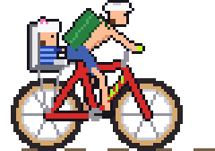

Hidden Gems: Adventure Playground, Billy Johnson Playground, River Run Playground, Chelsea Waterside Playground, Tom Otterness Playground, Waterline Square Park
Worth the Trip: Domino Park, Heckscher Playground, Pier 6, Brooklyn Bridge Park, The Yard, Governors Island, Slide Hill, Governors Island, River Run Playground, Battery Playscape, Chelsea Waterside Playground, Pier 26 Science Playground
Most Fun for Parents: Domino Park, Pier 6, Brooklyn Bridge Park, Slide Hill, Governors Island, Battery Playscape, Chelsea Park Playground, Gertrude Ederle Playground
Best for Tots: Tarr-Coyne Tots Playground, Tarr-Coyne Wild West Playground, Toll Family Playground, Pier 51 Playground, Battery Playscape, Chelsea Waterside Playground
Best Hudson River Greenway Stops: River Run Playground, Pier 51 Playground, Battery Playscape, Chelsea Waterside Playground, Tom Otterness Playground, Pier 26 Science Playground
Open After Dark: Waterline Square Park, West End Park, Tom Otterness Playground
Best Avoided: Imagination Playground, Classic Playground, Dinosaur Playground, Balsley Park
Also reviewed: Erie Canal Playground, Tarr Family Playground, Ancient Playground, Pier 97 Playground, Safari Playground, Margaret L. Kempner Playground